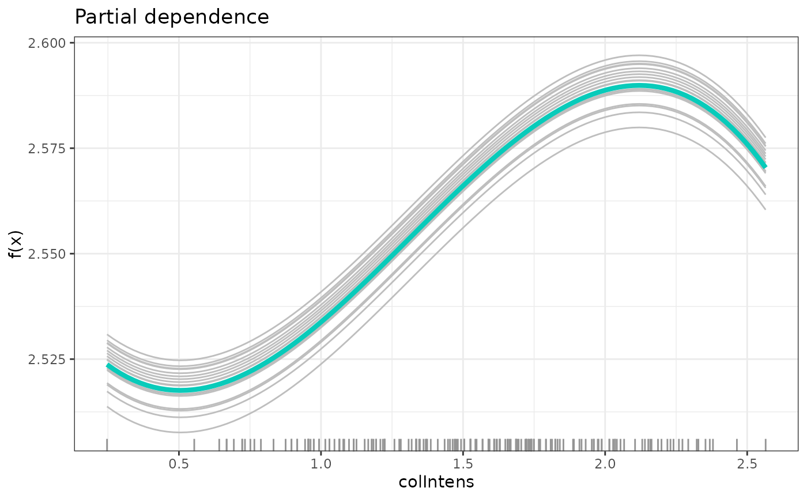

Estimate high-dimensional additive models using spectral deconfounding scheidegger2023spectralSDModels. The covariates are expanded into B-spline basis functions. A spectral transformation is used to remove bias arising from hidden confounding and a group lasso objective is minimized to enforce component-wise sparsity. Optimal number of basis functions per component and sparsity penalty are chosen by cross validation.
SDAM(
formula = NULL,
data = NULL,
x = NULL,
y = NULL,
Q_type = "trim",
trim_quantile = 0.5,
q_hat = 0,
nfolds = 5,
cv_method = "1se",
n_K = 4,
n_lambda1 = 10,
n_lambda2 = 20,
Q_scale = TRUE,
ind_lin = NULL,
mc.cores = 1,
verbose = TRUE
)Object of class formula or describing the model to fit
of the form y ~ x1 + x2 + ... where y is a numeric response and
x1, x2, ... are vectors of covariates. Interactions are not supported.
Training data of class data.frame containing the variables in the model.
Matrix of covariates, alternative to formula and data.
Vector of responses, alternative to formula and data.
Type of deconfounding, one of 'trim', 'pca', 'no_deconfounding'.
'trim' corresponds to the Trim transform Cevid2020SpectralModelsSDModels
as implemented in the Doubly debiased lasso Guo2022DoublyConfoundingSDModels,
'pca' to the PCA transformationPaul2008PreconditioningProblemsSDModels.
See get_Q.
Quantile for Trim transform,
only needed for trim, see get_Q.
Assumed confounding dimension, only needed for pca,
see get_Q.
The number of folds for cross-validation. Default is 5.
The method for selecting the regularization parameter during cross-validation. One of "min" (minimum cv-loss) and "1se" (one-standard-error rule) Default is "1se".
The number of candidate values for the number of basis functions for B-splines. Default is 4.
The number of candidate values for the regularization parameter in the initial cross-validation step. Default is 10.
The number of candidate values for the regularization parameter in the second stage of cross-validation (once the optimal number of basis function K is decided, a second stage of cross-validation for the regularization parameter is performed on a finer grid). Default is 20.
Should data be scaled to estimate the spectral transformation?
Default is TRUE to not reduce the signal of high variance covariates.
A vector of indices specifying which covariates to model linearly (i.e. not expanded into basis function). Default is `NULL`.
Number of cores to use for parallel processing, if mc.cores > 1
the cross validation is parallelized. Default is `1`. (only supported for unix)
If TRUE fitting information is shown.
An object of class `SDAM` containing the following elements:
The original design matrix.
The number of covariates in `X`.
The intercept term of the fitted model.
A vector of the number of basis functions for each covariate, where 1 corresponds to a linear term. The entries of the vector will mostly by the same, but some entries might be lower if the corresponding component of X contains only few unique values.
A list of breakpoints used for the B-splines. Used to reconstruct the B-spline basis functions.
A list of coefficients for the B-spline basis functions for each component.
A vector of active covariates that contribute to the model.
set.seed(1)
X <- matrix(rnorm(10 * 5), ncol = 5)
Y <- sin(X[, 1]) - X[, 2] + rnorm(10)
model <- SDAM(x = X, y = Y, Q_type = "trim", trim_quantile = 0.5, nfold = 2, n_K = 1)
#> [1] "Initial cross-validation"
#> [1] "Second stage cross-validation"
# \donttest{
library(HDclassif)
#> Loading required package: MASS
data(wine)
names(wine) <- c("class", "alcohol", "malicAcid", "ash", "alcalinityAsh", "magnesium",
"totPhenols", "flavanoids", "nonFlavPhenols", "proanthocyanins",
"colIntens", "hue", "OD", "proline")
wine <- log(wine)
# estimate model
# do not use class in the model and restrict proline to be linear
model <- SDAM(alcohol ~ -class + ., wine, ind_lin = "proline", nfold = 3)
#> [1] "Initial cross-validation"
#> [1] "Second stage cross-validation"
# extract variable importance
varImp(model)
#> class malicAcid ash alcalinityAsh magnesium
#> 2.200743e-04 6.616034e-06 1.077807e-05 0.000000e+00 0.000000e+00
#> totPhenols flavanoids nonFlavPhenols proanthocyanins colIntens
#> 0.000000e+00 3.574768e-06 5.505266e-06 2.152082e-07 4.544776e-04
#> hue OD proline
#> 0.000000e+00 0.000000e+00 0.000000e+00
# most important variable
mostImp <- names(which.max(varImp(model)))
mostImp
#> [1] "colIntens"
# predict for individual Xj
predJ <- predict_individual_fj(object = model, j = mostImp)
plot(wine[, mostImp], predJ,
xlab = paste0("log ", mostImp), ylab = "log alcohol")
# partial dependece
plot(partDependence(model, mostImp))

# predict
predict(model, newdata = wine[42, ])
#> [1] 2.574795
## alternative function call
mod_none <- SDAM(x = as.matrix(wine[1:10, -c(1, 2)]), y = wine$alcohol[1:10],
Q_type = "no_deconfounding", nfolds = 2, n_K = 4,
n_lambda1 = 4, n_lambda2 = 8)
#> [1] "Initial cross-validation"
#> [1] "Second stage cross-validation"
# }